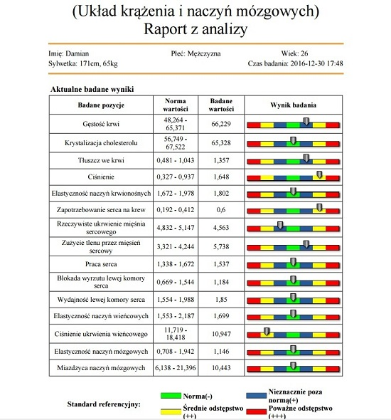
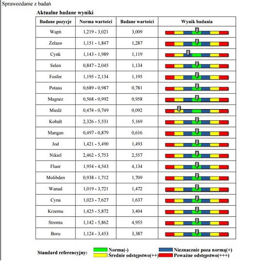
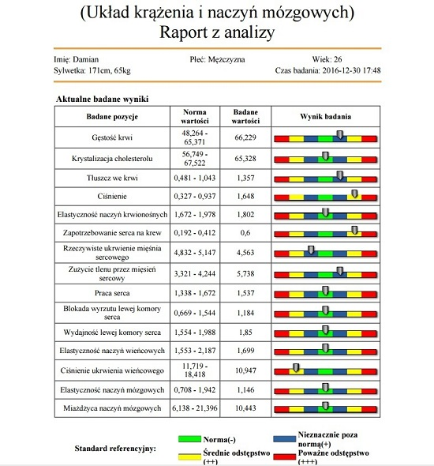
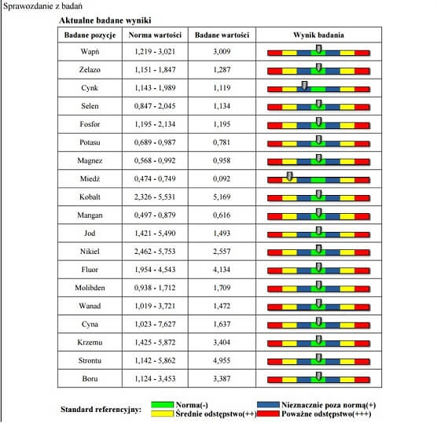

Jesteśmy pozytywnie zakręconymi ludźmi, którzy głęboko wierzą w to, że mimo iż siła jednostki często jest niedoceniana a naprawdę warto pomagać innym i tym samym, chociaż w małym procencie, zmieniają świat na lepsze. Z troską podchodzimy do ludzkich problemów dnia codziennego i wiemy, jak ważne w życiu każdego jest zdrowie, dlatego też oferujemy usługi z zakresu Mikroskopowego Badania żywej Kropli Krwi oraz biorezonansu magnetycznego. Techniki te pozwalają nam bowiem określić stan organizmu i wskazać osobom poddanym badaniom dobrą drogę do poprawy zdrowia, jeżeli tylko takiej poprawy potrzebują.
Ukończyliśmy kurs podstawowy i zaawansowany w zakresie Mikroskopowego Badania żywej Kropli Krwi według profesora, doktora Gunthera Enderleina. Odbyte szkolenia i zdobyta dzięki nim wiedza, poparta odpowiednimi certyfikatami, uczyniły z nas techników analityki medycznej o nr zawodu 321201 (według Rozporządzenia Ministerstwa Pracy i Polityki Społecznej z dnia 7 sierpnia 2014 roku Dz.U. z 2014 roku, poz. 1145). Stosowane przez nas techniki są zresztą doskonałym uzupełnieniem dla tradycyjnych badań krwi, wykonywanych w laboratoriach medycznych.
Jesteśmy osobami uczciwymi. Bardzo cenimy sobie zaufanie, jakim obdarzają nas inni. Oferujemy usługi na wysokim poziomie, podparte uzyskaną przez nas wiedzą teoretyczną, jak i tą zdobytą w toku przeprowadzanych przez nas badań.
Z przykrością odnotowujemy na rynku obecność osób niekompetentnych, nieodpowiednio przygotowanych do przeprowadzania analizy obrazu krwi, działających tym samym na szkodę ludzi, którzy oddali w ich ręce swoje zdrowie i samopoczucie. Sami zawsze przed takimi osobami przestrzegamy i uczulamy innych na to, aby sprawdzali oni wiarygodność specjalistów, w których ręce chcą się oddać. Jak można to uczynić? Odpowiedź jest bardzo prosta. Wystarczy przed poddaniem się badaniu poprosić o okazanie certyfikatów potwierdzających kompetencje danej osoby. Sami ZAWSZE przed pierwszym badaniem określonego klienta swoje certyfikaty okazujemy. Chcemy, aby każda osoba korzystająca z naszych usług była spokojna o nasze kompetencje i pewna, że przeprowadzane przez nas analizy są profesjonalne.
Nasze doświadczenie, jak i indywidualne podejście do klienta pozwalają na bezstresowe wykonanie analiz na wysokim poziomie. Zawsze staramy się o przyjazną atmosferę podczas świadczenia usług. Komfort pacjentów jest dla nas priorytetem. Ze szczególną ostrożnością podchodzimy do dzieci, które często nie są jeszcze oswojone z wszelkimi badaniami i niejednokrotnie nie zdają sobie sprawy, dlaczego i w jaki sposób zostaną one przeprowadzone.
Prywatnie jesteśmy ludźmi o szerokim polu zainteresowań. Dbamy nie tylko o zdrowie ludzi, ale także i zwierząt, a szczególnie bliskie są nam szynszyle. To właśnie miłość do nich stała się inspiracją do powołania przez nas internetowego sklepu dla królików i gryzoni Elzonik.pl, oferującego mnóstwo zdrowych i pełnowartościowych produktów dla naszych braci mniejszych.
Ponadto niezwykle cenimy sobie ciepło domowego ogniska, którym jak wiadomo w pełni można cieszyć się, kiedy dobre samopoczucie dopisuje, a te najpiękniejsze, ale niestety ulotne chwile chętnie dokumentujemy na zdjęciach, aby w każdym momencie życia móc do nich powracać. Czasami chodzimy z głową w chmurach i to niemal dosłownie, bo oprócz tego, że lubimy marzyć i wierzymy, że marzenia się spełniają, interesujemy się także lotnictwem. Cenimy też dobre książki, nie tylko te z literatury fachowej. Lubimy budować wartościowe relacje z ludźmi, dlatego też cenimy pracę z klientami.

 


